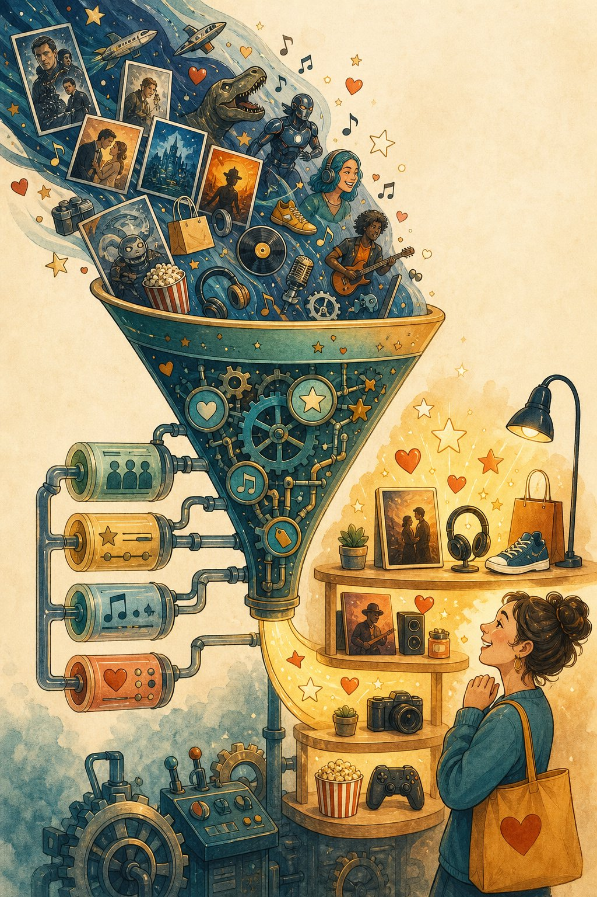

Recommender systems deep-dive
Beyond the system-design sketch: two-tower retrieval, deep rankers, position debias, bandits, and the metrics that keep optimisers honest. The engine behind every feed you scroll.

Figure 58.1 — Retrieve broadly, rank sharply, explore deliberately. Three models, one feed.
1. Two-tower retrieval
2. Rankers & the bias traps
- Deep ranker: wide+deep / DCN / transformers over user×item×context features, multi-task (click, like, dwell, hide). Calibrate probabilities — downstream blending needs honest scores.
- Position bias: top slots get clicks for being top. Fix: position as a feature at train, removed/balanced at serve; or IPS weighting; or randomised exploration buckets.
- Selection bias: you only observe feedback on shown items. Fix: log exposure + propensities, random holdouts, counterfactual (IPS/DR) evals offline.
- Feedback loops: model narrows what users see → data narrows → model narrows. Fix: exploration slots, diversity constraints, novelty boosts, periodic “explore” traffic.
3. Explore smart: bandits → RL
| Method | Idea | Use |
|---|---|---|
| ε-greedy | Random item with prob ε | Baseline exploration, cold start |
| UCB / Thompson | Explore uncertain + promising arms | New items, new users |
| Contextual bandits | Arm choice conditioned on user/item features | Personalised exploration at scale |
| Full RL / LTR | Optimise long-term retention, slate effects | Mature systems with simulators |
Recsys pitfalls
Optimising clicks → clickbait (Goodhart) · offline AUC up, online retention flat (metric mismatch) · no exploration (filter bubbles + stale) · cold start ignored · popularity bias burying new creators · engagement without well-being guardrails.
Short notes
Retrieve with two-tower + ANN (hard negatives matter); rank multi-task + calibrated; correct position/selection bias (IPS, exposure logs, random buckets); explore via bandits; guard with diversity + novelty + well-being constraints. Judge by long-term retention/satisfaction, not clicks.
Point notes
- Towers + ANN = instant retrieval.
- Calibrate ranker scores.
- Position lies; de-bias it.
- Log exposure always.
- Retention > clicks.
MCQs
5 questions1. Two-tower retrieval serves 100M items fast because:
2. Position bias means top-slot clicks overstate quality. Standard fix:
3. Logging exposure (what was shown, at which rank) enables:
4. Thompson sampling beats ε-greedy for new items by:
5. Offline AUC rises but online retention is flat. Most likely:
Practice questions
P1. New creators get zero reach (“popularity bias”). Your 3 fixes + how you’d measure?
(1) Exploration slots: % of traffic for new items via Thompson sampling. (2) Cold-start tower using content features (no engagement needed). (3) Creator-side caps/floors in reranking. Measure: new-creator impressions → follows, retention of new creators, and overall satisfaction (guardrail: no drop).
P2. Design the offline eval that actually predicts online wins.
Time-split replay on exposure-logged data with IPS/DR counterfactual estimators + randomised-bucket ground truth; rank-correlation of offline deltas vs past A/B outcomes (build the “offline→online” calibration); slice by new/existing users/items. Promote only models that win offline AND pass bias-sensitivity checks.
P3. PM wants “maximise watch time, no constraints.” Your 60-second response?
Unconstrained watch-time breeds outrage/clickbait and burns trust — show the hides/regrets data. Counter-proposal: multi-objective (watch + completes + likes − hides + surveys) with diversity/novelty floors and well-being guardrails; long-term holdout on retention. Growth that users regret isn’t growth.